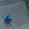

40 jours — 10
Fichiers conservés de la collection Metaflash.
Ouvrir l’imageFichiers conservés
40jours/10.jpg


Informations du fichier
- Nom conservé
- 00869de386c68f022e692404f5427ca841b18e5c294bd2f54522f4cebb3c61e9.jpg
- Taille
- 1,095 octets
- SHA-256
- 00869de386c68f022e692404f5427ca841b18e5c294bd2f54522f4cebb3c61e9
Provenance dans la sauvegarde Metaflash :
- 40jours/10.jpg (00869de386c68f022e692404f5427ca841b18e5c294bd2f54522f4cebb3c61e9)
40jours/10c.jpg

Informations du fichier
- Nom conservé
- d849a548694f8b98d60ed7358a7b6d9c020eb65bea344536dcd7390a291e2a9e.jpg
- Taille
- 3,056 octets
- SHA-256
- d849a548694f8b98d60ed7358a7b6d9c020eb65bea344536dcd7390a291e2a9e
Provenance dans la sauvegarde Metaflash :
- 40jours/10c.jpg (d849a548694f8b98d60ed7358a7b6d9c020eb65bea344536dcd7390a291e2a9e)
40jours/10d.jpg

Informations du fichier
- Nom conservé
- a45bb848dff8e80bff9e95bcec54c779e8a7cf97bc50945f1a1b45bbe44b58ee.jpg
- Taille
- 3,389 octets
- SHA-256
- a45bb848dff8e80bff9e95bcec54c779e8a7cf97bc50945f1a1b45bbe44b58ee
Provenance dans la sauvegarde Metaflash :
- 40jours/10d.jpg (a45bb848dff8e80bff9e95bcec54c779e8a7cf97bc50945f1a1b45bbe44b58ee)